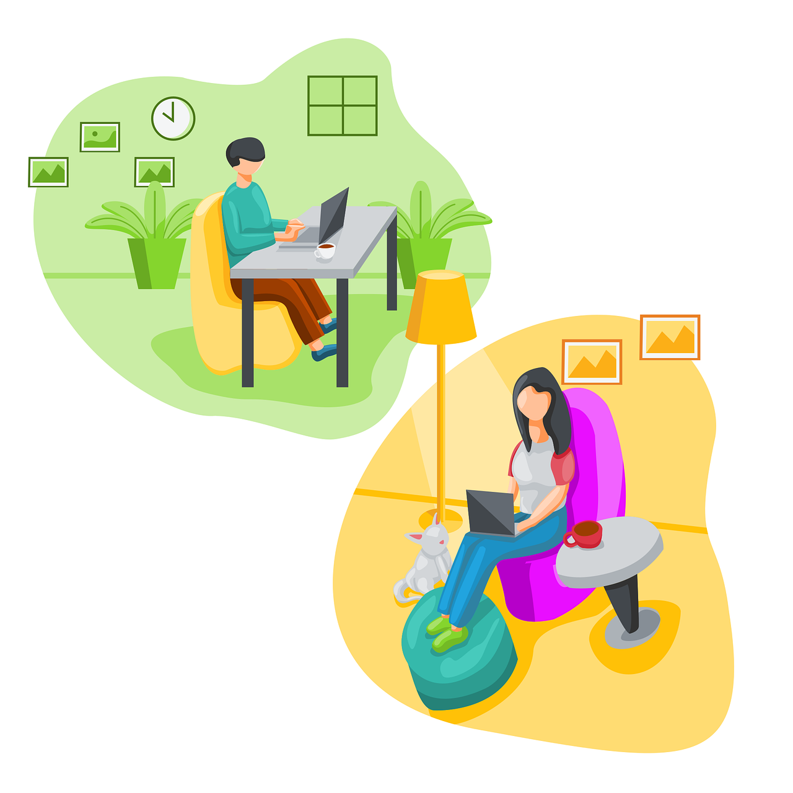

1. Beruf, Leistung und Finanzen
Es ist besonders wichtig, dass Arbeitnehmer mit ihrem Beruf zufrieden sind. Im Besten Fall hat man Spaß an der Arbeit und ist mit Motivation bei der Sache. Davon profitieren auch die Arbeitgeber, denn zufriedene Angestellte sind in der Regel konzentrierter, wodurch deren Produktivität und Leistungsfähigkeit gesteigert werden. Außerdem wird es ihnen ermöglicht, ihre Fähigkeiten zu verbessern und
weniger Fehler aus Erschöpfung zu machen.
Mitarbeiter mit einer ausgeglichenen Work Life Balance bleiben eher im Unternehmen, wodurch weniger Kosten durch neue Rekrutierungen entstehen.
Glückliche Arbeiter sorgen außerdem für ein besseres Unternehmensimage.
2. Familie und soziale Kontakte
Menschen sind überaus soziale Wesen und benötigen deshalb genügend Zeit für Familie und Freunde, um ein soziales Leben führen und ein gesundes Umfeld aufrecht erhalten zu können. Dies gelingt nur durch angemessene Arbeitszeiten, damit man für sich wichtige Personen nicht aus den Augen verliert.
3. Gesundheit und Fitness
Auszeiten sind außerordentlich bedeutend für das physische und psychische Wohlbefinden. Durch besonders viel Stress und mangelnder Freizeit wächst das Risiko, ein Burnout zu erleiden. In anderen Fällen können sich auch Depressionen, Schlafmangel, Bluthochdruck, Herzerkrankungen, chronische Schmerzen oder Angstzustände entwickeln.
Es ist essenziell, dass man ausreichend Zeit für Freizeitaktivitäten hat, um
seine Hobbies ausführen zu können, sowie regelmäßig Sport zu treiben,
was die körperliche, als auch seelische Gesundheit positiv beeinflusst.
4. Sinn, Werte und Kultur
Um den wirklichen Sinn seiner Arbeit zu erkennen, sollte man sich ganz genau vergewissern, welche beruflichen und privaten Ziele man verfolgt. Es ist wichtig, sich folgende Fragen ausführlich zu überlegen: Was sind meine Wünsche für die Zukunft? Was möchte ich beruflich erreichen? Will ich eine Familie gründen oder mehr Wert darauf legen, den größtmöglichen Erfolg in meiner Karriere zu erzielen? Was gibt mir Kraft?
In folgender Umfrage, die wir ebenfalls an unserer Schule durchgeführt haben, stellt sich heraus, dass eine knappe Mehrheit weniger als 30 Wochenstunden arbeiten möchte

Probleme der Work-Life-Balance aus Sicht der Arbeitgeber:
Für Arbeitgeber ist es nicht immer einfach, humane Arbeitszeiten zu verteilen oder Urlaubstage und die Stundenreduzierung von Arbeitnehmern zu berücksichtigen. So kommt es, dass Arbeitgeber mehr Angestellte benötigen, um ihr Unternehmen aufrechtzuerhalten.
Zudem ist die Errichtung des Dienstplans komplizierter, da viele Wünsche zu berücksichtigen sind.
In den folgenden Interviews mit Michael Herrmann & Alexander Riha werden weitere Chancen und Risiken der Stundenreduzierung, insbesondere der 30-Stunden-Woche aufgezeigt.
Interviews:
https://youtu.be/BBw2R8aKXBs?si=Yfzm0m4BRV_T4WbN
https://youtu.be/J08rD2WV5Lc?si=6yIgsr_UXgXmCSzl
Lösungsansätze für Arbeitgeber:
• Ausreichend Projektzeit einplanen
• Umfragen zur Work-Life-Balance durchführen
• Feedbackgespräche mit Arbeitnehmern führen
Lösungsansätze für Arbeitnehmer:
• Flexible Arbeitszeiten und ortsunabhängiges Arbeiten
• Unnötige Aufgaben vermeiden
• Pausen zulassen und Zeit für sich selbst nehmen
• Keine arbeitsbezogenen Nachrichten während der Freizeit

Doch was soll man eigentlich tun, wenn man kleine Kinder und somit keine Zeit für den Job hat, aber trotzdem gerne arbeiten würde? Eine Möglichkeit wäre es doch, ins Homeoffice zu wechseln.
Aber von zu Hause aus Arbeiten und sich gleichzeitig um die Nachkommen kümmern, kann das gut gehen? Um herauszufinden, was die Schüler des Staatlichen Gymnasiums Holzkirchen dazu sagen, haben wir eine kleine Umfrage gemacht:
Hier kann man erkennen, dass der Großteil der Befragten der Meinung ist, dass Homeoffice und Familie miteinander vereinbar sind. Zudem haben viele von ihnen Eltern, bei denen dies schon der Fall ist. Es kann also definitiv funktionieren, es hängt jedoch auch von einigen entscheidenden Faktoren ab.
1. Um in Ruhe arbeiten zu können, benötigt man einen ruhigen Arbeitsplatz. Hierfür eignet sich vor allem ein eigenes Büro. In einer kleinen Wohnung kann man aber auch eine Ecke im Raum umfunktionieren.
2. Wer morgens besonders früh aufsteht und seine Kinder ausschlafen lässt, hat mit etwas Glück ein paar ruhige Stunden, in denen derjenige die Arbeit verrichten kann, welche die größte Konzentration und Stille erfordert, wie zum Beispiel wichtige Telefonate.
3. Damit man auch später noch entspannt arbeiten kann, lohnt es sich, Kinder sich alleine beschäftigen zu lassen. Hierzu besteht die Möglichkeit, sie ein Hörspiel hören zu lassen oder ihnen etwas zu basteln oder zu kneten zu geben.
4. Entscheidend ist vor Allem, Struktur in den Arbeitsalltag zu bringen. Wenn jeden Tag alles zur selben Zeit geschieht, können sich die Kinder an diese Abläufe gewöhnen, sich selbst beschäftigen und sind während des Homeoffice ruhig.
Ausblick in die Zukunft:
Wie auch durch die Umfragen an unserer Schule ersichtlich, sind eine Reduzierung der Wochenstunden oder sogar eine weitreichende Verbreitung der 30-Stunden-Woche deutscher Arbeitnehmer zu erwarten.
• https://www.ndr.de/ratgeber/gesundheit/Work-Life-Balance-Job-und-Freizeit-im-Gleichgewicht,worklife122.html
• https://www.hrworks.de/lexikon/work-life-balance/
• https://www.hrworks.de/lexikon/work-life-balance/#:~:text=Die%204%20Säulen%20der%20Lebensbalance%20umfassen%20Beruf%2C%20Leistung%20und%20Finanzen,Work%2DLife%2DBalance%20tun%3F
• https://www.robertwalters.de/insights/karriere-tipps/blog/arbeiten-im-homeoffice-mit-kind.html